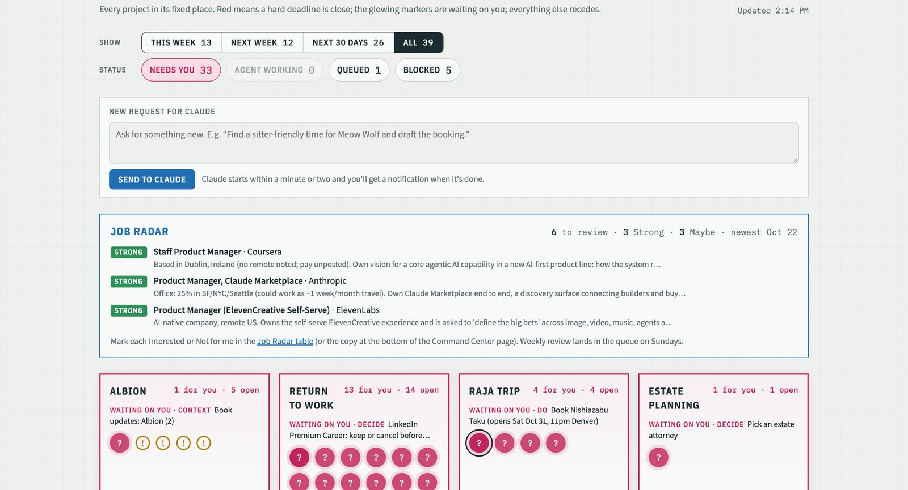
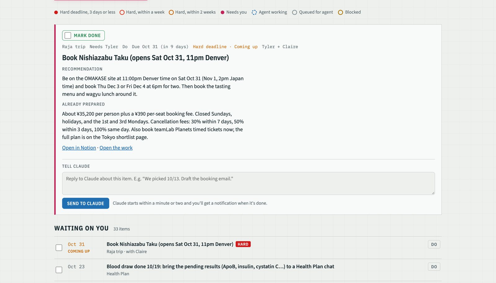

Every AI assistant I'd used waited for me to start. The Assistant Dashboard is one page where agents bring me decisions they've already prepped, laid out like a site plan: one tile per project, one marker per item that needs me. Five seconds tells me whether anything is on fire and whether anything is mine.

One tile per project, one marker per item waiting on me.
TL;DR
Agents do the work, I make the calls. Twice a day a scheduled Claude run checks my inbox, reads each project's notes, takes items as far as an agent is allowed to, and writes one queue item per decision with the recommendation on top and the prep underneath.
Every project in one place. A dinner booking in Tokyo sits next to a permit question for the house addition and a job referral. One queue, every project, each in a fixed spot on the screen.
Red means something. Only hard deadlines, where something breaks or costs money, turn red. Soft ones slip quietly and get a new date proposed instead of a nag.
I reply from the page. A one-line answer on any item starts the next run. It prepares, I decide in a line, it carries on.
Early iterations
1. Everything was red
What happened. Every item on the page turned red the moment it was overdue, including self-imposed targets like "pick an estate attorney." After a week I'd learned to ignore red, which defeats the point of red.
What I changed. Every deadline is now typed Hard or Soft. Only Hard ones get urgency colors, and they escalate on a schedule: orange two weeks out, red inside a week, a pulsing alarm inside three days. Soft ones never turn red; past due they show as "slipped" and the next run proposes a new date. Red means something again.
2. The agent was making my decisions
What happened. Early on, the agent's recommendations kept showing up in the decision log as if I'd made them. It wasn't wrong often, but I couldn't tell which calls were mine.
What I changed. Anything that changes a decision, a preference or a project brief now waits behind a single approval item I answer with "go." Memory is a page I can read and edit, not a transcript I have to scroll.
What I learned
It's agile the way the manifesto meant it. The page has had something like a hundred changes since the end of September, always the same way: I use it for a few days, something feels off, I describe the change, it ships in minutes. No single change was the breakthrough; a hundred small ones were. For most of my career, iterating a hundred times in a few weeks was something we said we did. This is the first time it has been literally true.
Product taste is the scarce input. Building is cheap now, so the hours go to deciding what should exist, where it lives on the screen, and what the agent may touch. I've spent far more time on what the morning page looks like than on any script behind it, and I think that ratio is right.
Check the inbox before trusting the queue. The very first run worked a queue that was already behind my email. Every run now starts with Gmail.
Under the hood
A site plan, not a feed: fixed tiles, one marker per open item, and a reply box that starts the next run. The queue is a Notion table; the page is one HTML file that reads it.
The record is Notion. An Attention Queue database plus one Project Book page per project (brief, decision log, open questions, session log). Notion is the system of record because it's the one tool both I and the agents can read and edit, and it works on my phone. If it isn't in Notion, the agent doesn't know it.
The page is one HTML file. No framework. It reads the queue through the Notion connector every fifteen minutes and draws projects as tiles and items as markers. It reads a saved view rather than querying rows, because Notion's row queries have a workspace quota that the first version exhausted in a day.
The attention hierarchy is a formula. Every item has a Hard or Soft deadline and a due date; a Notion formula turns that into an urgency. Hard items go 🚨 Critical inside three days, 🔴 Urgent at four to seven, 🟠 Coming up at eight to fourteen, 🟢 Calm beyond. When anything is Critical, the phone summary leads with it. Fun projects live in their own yard with no dates, no colors and no alerts.
Runs follow a written protocol. Inbox before queue. Read the book before acting. Stop at the human-only step: deciding, signing, sending in my name, moving money, conversations with family. Drafts are written in my voice from a saved style profile, and when I edit a draft before sending, the run compares the two and offers to update the profile. Every run ends by logging what it learned to the book.
Two rules I'd keep if I threw everything else out. The one-minute rule: if an item takes me longer than a minute to act on, the agent didn't finish its prep, and it goes back. And batching: a few items per project per day, never a stream of pings.

One item, opened: recommendation first, prep underneath, a reply box that starts the next run.
There's no public repo because the page is wired to my own Notion workspace and holds personal data. The pieces that generalize, the loop and the Project Books memory model, are on AI System.